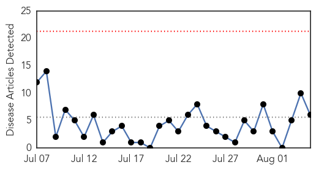
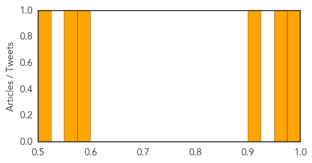
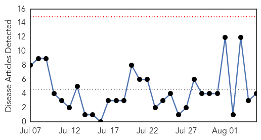
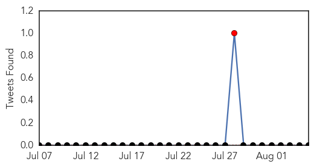
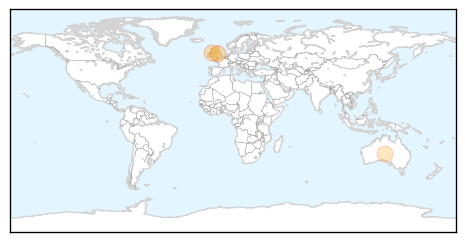
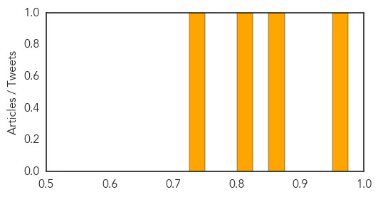

Measles
30-Day Web Trend
0 alerts, 0 warnings

30-Day Twitter Trend
0 alerts, 0 warnings

Article Locations

Article Confidences
Top Articles:
- 0.999
- Dont worry , be horny!
- 0.963
- Ministry of Health coordinates efforts with WHO to respond to measles outbreak in Sudan
- 0.904
- Sudan FMOH coordinates efforts with WHO to respond to measles outbreak in Sudan - Sudan
- 0.576
- What's behind the 'anti-vax' movement?
- 0.556
- Labels must clarify nosodes are not vaccines
- 0.517
- What’s the Best Way to Sway Vaccine Skeptics?
Top Tweets:
-
No tweets found for Aug 05, 2015
Meningitis
30-Day Web Trend
0 alerts, 0 warnings

30-Day Twitter Trend
1 alerts, 0 warnings

Article Locations
Article Confidences
Top Articles:
Top Tweets:
-
No tweets found for Aug 05, 2015